Cosmovisión · Clases
La dimensión astrológica del sanador herido
Un recorrido en cinco partes por el arquetipo de Quirón: mito, astrología y una reflexión sobre estos tiempos.
El oficio del alma
sobre la tierra.
Cómo se construye este flujo
Un lenguaje, no un oráculo.
Estas clases no enseñan a predecir el futuro. Enseñan a leer la herida.
Quirón —el centauro que sanaba a todos menos a sí mismo— es aquí un lenguaje: un modo de mirar el dolor propio no como una avería que reparar, sino como el lugar exacto desde donde uno puede acompañar a otros.
El recorrido avanza en cinco partes. Cada una puede leerse como una clase, o dividirse en varias. Iremos integrando el texto poco a poco; este documento es la raíz sobre la que crece todo lo demás.
Índice
Cinco partes, un solo tránsito.
Primera parte
I
El arquetipo de Quirón
La paradoja de la herida · el retorno hacia la madurez · la función de llave al mundo transpersonal · el puente entre personalidad y alma · el símbolo del Centauro.
Introducción
El que habita el umbral.
Hay figuras que no caben del todo en ninguna categoría, y por eso mismo nos enseñan algo que ninguna categoría podría enseñarnos. Quirón es una de ellas. No era un dios, aunque era inmortal. No era un hombre, aunque conocía el dolor como sólo lo conocen los mortales. No era del todo un animal, aunque tenía el cuerpo de un caballo. Vivía en el borde de las cosas: entre el Olimpo y la tierra, entre la bestia y el sabio, entre la salud que daba a otros y la herida que él mismo cargaba y no podía cerrar.
Ese habitar el umbral es el corazón de todo lo que veremos en este recorrido. Porque Quirón no es solamente un personaje de un mito antiguo. Es una manera de estar en el mundo. Y —lo que casi nadie sabe— es también un cuerpo celeste real, descubierto hace menos de medio siglo, cuya sola ubicación en el cielo cuenta el mito otra vez, con otras palabras.
Un descubrimiento que era ya una revelación
El 1 de noviembre de 1977, el astrónomo Charles Kowal encontró en el observatorio de Monte Palomar un objeto extraño que no terminaba de ser ni asteroide ni cometa. Lo llamaron Quirón. Con el tiempo se le clasificó como el primero de una nueva familia de cuerpos: los centauros, que orbitan en la zona intermedia del sistema solar.
Aquí conviene detenerse, porque la astronomía y el mito dicen exactamente lo mismo sin ponerse de acuerdo. Quirón orbita entre Saturno y Urano. Saturno es el último planeta que el ojo humano alcanza a ver sin ayuda: es el límite de lo conocido, la estructura, la norma, la piel de nuestra personalidad. Urano, en cambio, es el primer planeta que sólo se descubre con instrumentos: es lo que está más allá del límite, el despertar, la libertad, aquello que no controlamos y que sin embargo nos transforma.
Quirón viaja entre ambos. Es literalmente el puente entre lo que somos y lo que podríamos llegar a ser; entre la personalidad y el alma. Su glifo astrológico, no por casualidad, tiene la forma de una llave. Una llave abre. Y lo que Quirón abre es la puerta entre dos mundos que la mayoría de la gente vive como separados.
El sanador herido
El mito, en su forma más desnuda, es este: Quirón, el más sabio de los centauros, maestro de héroes, conocedor de las plantas, de la música, de la medicina y de las estrellas, fue herido por accidente con una flecha envenenada. Siendo inmortal, no podía morir. Pero la herida no cerraba. Así quedó: el más grande de los sanadores, incapaz de sanarse a sí mismo, viviendo con un dolor que no cesaba.
Podríamos leer eso como una tragedia. Pero el mito nos ofrece otra lectura, más difícil y más verdadera: fue precisamente esa herida la que hizo de Quirón el maestro que fue. No sanaba a los demás a pesar de su dolor, sino desde él. Conocía el sufrimiento por dentro. Y por eso, cuando alguien acudía a él roto, no encontraba a un sabio intacto que le hablaba desde arriba, sino a alguien que sabía exactamente dónde dolía.
Esa es la paradoja que recorreremos una y otra vez en estas clases: la herida que no cierra puede volverse medicina para otros. No la herida negada, ni la herida convertida en queja permanente, sino la herida mirada de frente, habitada, transformada. Ahí nace el sanador herido, la figura que da nombre a este arquetipo y que, veremos, aparece por todas partes: en la medicina, en la resiliencia, en el arte, en quien acompaña a un moribundo, en quien dona un órgano, en quien convierte su peor momento en lo más útil que tiene para dar.
Por qué ahora
Estas clases no llegan en un momento cualquiera. En términos astrológicos, estamos en un umbral que rara vez se cruza: desde 2018, Quirón transitó el signo de Aries, y en su recorrido nos confrontó, colectiva e íntimamente, con la herida de la identidad —el derecho a existir, a tomar espacio, a ser uno mismo sin pedir permiso—. Ese ciclo de casi ocho años está cerrando. En junio de 2026 Quirón pisó por primera vez el signo de Tauro, volverá a Aries unos meses para terminar la tarea, y quedará instalado en Tauro a partir de 2027. Con ese paso, la herida que empezamos a atender cambia de terreno: de la identidad al valor, al cuerpo, a la relación con la Tierra y con lo material.
Y esto ocurre en una humanidad que hace muy poco tocó su propia mortalidad de forma masiva. Una humanidad hiperconectada y, a la vez, extrañamente sola. Una época que descubrió, con una nitidez que no tenía desde hacía generaciones, que la vida es frágil y que la muerte no es un tema ajeno. Quirón habla exactamente de eso: de lo que hacemos con la fragilidad. De si la escondemos, la negamos, la convertimos en victimismo —o si la transformamos en sabiduría, en compasión, en oficio.
Por eso no es casualidad que este recorrido dedique una parte entera a la muerte como maestra, otra a la resiliencia, otra al nuevo ciclo que apenas comienza. No estamos hablando de astrología de horóscopo. Estamos usando a Quirón como un mapa del alma para leer nuestro propio tiempo.
El mapa del camino
En las cinco partes que siguen recorreremos:
- el arquetipo en sí: la paradoja de la herida, el retorno de Quirón hacia la madurez, su función como llave al mundo transpersonal;
- la muerte como maestra, desde el mito de la inmortalidad que Quirón entrega hasta el acompañamiento del morir y la obra de quienes, como Elisabeth Kübler-Ross, nos enseñaron a mirarla de frente;
- la resiliencia y el sanador herido, con Boris Cyrulnik, con figuras contemporáneas que encarnan el arquetipo, y con esa forma particular de felicidad que no niega el dolor sino que lo incluye: la felicidad agridulce;
- el nuevo ciclo que se abre, leído a la luz de lo que hemos vivido —la pandemia, la hiperconexión, la humildad que impone la finitud—;
- y, al final, salir de la cueva: el gesto de compartir la herida, de convertirla en lenguaje, en arte, en algo que se ofrece a los demás.
Cada quien llega a este camino en un punto distinto de su propia herida. Algunos llegan aún sangrando; otros ya iniciados; otros sanando; otros enseñando. Esa es, exactamente, la forma de una constelación: puntos de luz en distintos momentos, que sólo juntos dibujan una figura. Estas clases son el mapa que compartimos para recorrerla.
Empecemos.
La polaridad entre Júpiter y Plutón
La tensión que sostiene la herida.
En la clase anterior dejamos a Quirón habitando el umbral: entre el dios y el hombre, entre Saturno y Urano, entre la personalidad y el alma. Ese era el eje vertical de su naturaleza, el puente que recorre hacia arriba. Ahora vamos a mirar otra tensión, más íntima, que no atraviesa sino que sostiene: la que ocurre dentro de la herida misma. Porque toda herida verdadera vive estirada entre dos fuerzas, y aprender a nombrarlas es aprender a no romperse entre ellas.
A esas dos fuerzas la tradición las llama Júpiter y Plutón.
La ley de la polaridad
Antes de nombrar a los dos dioses, conviene recordar una ley antigua. Los herméticos la formularon con una sencillez desconcertante: todo es doble; todo tiene dos polos; todo tiene su par de opuestos. El calor y el frío parecen contrarios, pero son lo mismo —temperatura— en distintos grados. No hay una frontera donde termine uno y empiece el otro; hay un solo espectro que se recorre. Lo alto y lo bajo, la luz y la sombra, el placer y el dolor: no son enemigos, son los dos extremos de una única cosa.
Aquí aparece una distinción que será decisiva en todo este recorrido: una cosa es la polaridad y otra muy distinta es la polarización.
La polaridad es la estructura misma de la vida: la tensión fértil entre dos extremos que se necesitan. La polarización, en cambio, es lo que ocurre cuando la conciencia no tolera esa tensión y se refugia en uno solo de los polos, negando el otro. Y ahí —conviene subrayarlo desde ahora— nace una de las fuentes más profundas del sufrimiento humano. No sufrimos tanto por los opuestos como por habernos aferrado a la mitad de la verdad.
Quirón es, ante todo, un maestro de la polaridad. Su enseñanza no consiste en elegir un polo, sino en aprender a permanecer, sin quebrarse, en la cuerda tendida entre ambos.
Dos hermanos, dos reinos
En la mitología griega, Zeus —Júpiter— y Hades —Plutón— son hermanos. Hijos del mismo padre derrocado, se repartieron el cosmos: a Zeus le tocaron los cielos y las alturas; a Hades, el inframundo y las profundidades. Uno reina donde todo se expande, se ilumina y asciende. El otro reina donde todo desciende, se transforma y no regresa.
Esos dos reinos son, exactamente, las dos fuerzas que tensan la herida.
Júpiter es el principio de la expansión y del sentido. Es la fe, la confianza, la búsqueda de significado, el impulso que quiere comprender para qué. Es la flecha del arquero apuntando hacia lo alto —y no olvidemos que ese arquero es, en muchas versiones, el propio centauro—. Júpiter es la parte de nosotros que, incluso ante lo peor, pregunta: ¿qué me revela esto?, ¿hacia dónde me abre? Es la gracia que brota.
Plutón es el principio de la profundidad y de la muerte. Es lo irreversible, lo que no puede deshacerse ni argumentarse. Es el descenso al inframundo, la transformación que exige morir a algo. Plutón no consuela: confronta. Es la parte de la experiencia que no admite maquillaje, la que dice: esto ocurrió, esto duele, esto es real. Es la herida que no cierra.
La flecha que sube y envenena
Detengámonos en el instante fundador del mito, porque contiene la polaridad entera en una sola imagen. Quirón es herido por una flecha. Una flecha vuela: tiene la trayectoria ascendente de Júpiter, la aspiración, el arco tendido hacia lo alto. Pero esa flecha está impregnada con la sangre de la Hidra, un veneno del inframundo, incurable: la marca de Plutón, el descenso que no se revierte.
Una misma flecha, dos fuerzas. Sube y envenena. Aspira y hiere para siempre.
Ahí está condensada toda la enseñanza. La herida de Quirón no es solo dolor plutoniano ni solo sentido joviano: es las dos cosas a la vez, inseparables, en el mismo punto de la carne. Y por eso su lección se resume en una frase que parece imposible: duele y brota sentido. Simultáneamente. No primero el dolor y luego, con el tiempo, el consuelo. Los dos, al mismo tiempo, en la misma respiración.
Contradicción para la personalidad, paradoja para el alma
Para la mente ordinaria —lo que en este recorrido llamamos la personalidad— esto es sencillamente una contradicción. La personalidad funciona con lógica binaria: si duele, entonces está mal; si tiene sentido, entonces ya no debería doler. Necesita que las cosas sean o una o la otra. Frente a la herida quironiana, esa lógica se estrella.
Pero hay en el ser humano una percepción más sutil —llamémosla el alma— capaz de sostener a la vez lo que a la personalidad le resulta incompatible. Lo que para una es contradicción, para la otra es paradoja. Y no una paradoja estéril, sino creadora: dos verdades que no deberían poder convivir y que, sin embargo, forman una sola experiencia. Algunos la describen como un doble vínculo, una tensión que no se resuelve eligiendo, sino habitando.
Sostener esa paradoja es todo el trabajo. No cerrar la herida a fuerza de sentido, ni ahogar el sentido a fuerza de dolor. Permanecer en los dos polos. Disfrutar de la gracia con cierto nudo en la garganta. Agradecer con los ojos humedecidos. Esa mezcla exacta —gratitud y quebranto en el mismo gesto— es la firma inconfundible de Quirón.
Por qué esto importa ahora
Vivimos un tiempo con muy poca tolerancia a la polaridad. La cultura nos empuja sin descanso hacia un solo polo: hacia el bienestar sin sombra, la positividad sin grietas, la felicidad entendida como ausencia total de dolor. Y cuando el dolor llega —porque siempre llega— nos encuentra sin lenguaje, convencidos de que algo se ha averiado.
Quirón ofrece otra cosa. No promete quitarnos el polo oscuro; nos enseña a habitar la tensión entre ambos sin partirnos por la mitad. Esa es una forma de madurez espiritual poco común, y es la que sostiene a una constelación: personas que aprenden, juntas, a no huir hacia ninguno de los dos extremos.
Ahora bien, sostener esa tensión no es un gesto heroico ni una fórmula que se recita. Es una manera muy concreta de vivir, con una textura emocional inconfundible y con reglas propias que conviene comprender: por qué el sentido nunca llega garantizado, por qué encontrarlo no apaga el dolor, y por qué esa mezcla, lejos de ser una avería, es fértil. Ese es el trabajo de la próxima clase.
La paradoja de la herida
Duele y brota sentido —a la vez.
La palabra paradoja viene del griego: para, más allá o en contra; doxa, lo que se espera, lo que la opinión da por sentado. Una paradoja es aquello que contradice lo esperado y, sin embargo, es verdad. No un error de lógica, sino una verdad que no cabe en la lógica ordinaria.
Quirón es una paradoja caminando. Y su forma más desnuda es esta: es el más grande de los sanadores y no puede sanarse a sí mismo. Conoce todas las plantas, toda la medicina, todo el arte de aliviar el dolor ajeno; y su propia herida no cierra. La medicina que alcanza a todos no le alcanza a él.
Es tentador leer eso como una crueldad del destino. Pero el mito no lo cuenta como un defecto: lo cuenta como el corazón mismo del símbolo. La autoridad de Quirón para acompañar el dolor no viene a pesar de su herida. Viene de ella. Si sanara del todo, perdería precisamente aquello que lo vuelve capaz de sanar a otros. Su don y su herida están hechos de la misma materia.
El sentido no es automático
Aquí hay que decir algo con firmeza, porque de ello depende que toda esta enseñanza no se degrade en un consuelo barato.
La herida no viene acompañada automáticamente de un sentido. No existe una máquina interior donde uno introduce sufrimiento y obtiene significado a la salida. La frase "todo pasa por algo", dicha demasiado pronto, es una de las formas más sutiles de crueldad: salta por encima del dolor, le exige que ya signifique algo antes de haber terminado de doler.
El sentido, cuando llega, llega como una gracia. Y una gracia no es un salario. No se gana sufriendo, no se debe, no se puede reclamar. Hay heridas que tardan años en revelar aquello que traían. Hay heridas que quizá no lo revelen nunca, o no en esta vida. Reconocer esto no debilita a Quirón: lo vuelve honesto. Prometer sentido a cambio de dolor sería vender un narcótico. Quirón no vende narcóticos.
Duele y brota sentido —a la vez
La segunda regla de la paradoja es que el sentido, cuando aparece, no llega después del dolor para reemplazarlo. No es una secuencia: primero sufro, luego comprendo, y entonces deja de doler. Es una simultaneidad.
Encontrar el sentido no apaga la herida. Y que la herida siga abierta no significa que de ella no pueda brotar sentido. Las dos cosas ocurren en el mismo instante, en el mismo punto de la carne: duele y brota sentido. Corren en paralelo, sin cancelarse.
Para la personalidad —esa parte nuestra que necesita que las cosas sean o blancas o negras— esto es sencillamente inadmisible. Pero el alma sabe habitarlo. Lo que para una es contradicción insoportable, para la otra es paradoja fértil.
El doble vínculo que, en vez de atrapar, libera
La psicología describió una figura muy parecida: el doble vínculo. Dos mensajes contradictorios de los que no se puede escapar —"haz esto" y "no lo hagas", a la vez—, una trampa donde cualquier salida es un fracaso. En su forma clínica, el doble vínculo enferma: atrapa a la persona entre dos imperativos imposibles.
Lo asombroso de Quirón es que su paradoja tiene exactamente la misma estructura —dolor y sentido, a la vez, sin salida— y sin embargo produce el efecto contrario. No enferma: crea. ¿Qué cambia? No la estructura, sino la postura. El doble vínculo atrapa mientras uno pelea por salir, por resolverlo, por quedarse con una sola mitad. En el momento en que uno deja de forcejear y acepta habitar las dos verdades a la vez, la trampa se convierte en puerta. Por eso se la llama paradoja creadora: de la fricción entre los dos polos nace algo que no existía en ninguno de ellos por separado —una sensibilidad nueva, una compasión que antes no se tenía, el don del sanador herido.
La firma emocional
¿Cómo sabe uno que está de verdad dentro de la paradoja, y no escondido en una mitad cómoda? Por la textura de lo que siente.
La vivencia quironiana tiene una firma inconfundible: es disfrutar de la gracia con cierto nudo en la garganta. Agradecer con los ojos humedecidos. Una alegría que trae un temblor adentro. Gratitud y quebranto en el mismo gesto.
Esa firma es también una brújula. Si lo que uno siente es serenidad perfecta, sin ninguna sombra, probablemente huyó hacia el sentido y dejó la herida afuera. Si lo que siente es solo amargura, sin ningún resquicio de gracia, probablemente se quedó atrapado en la herida y le cerró la puerta al sentido. La paradoja verdadera se reconoce porque se sienten las dos cosas a la vez: la herida sigue presente, y sin embargo hay gratitud por aquello que la propia herida permitió revelar.
Una advertencia necesaria
Nada de esto idealiza el sufrimiento. Conviene decirlo sin rodeos, porque el arquetipo se presta a malentendidos peligrosos.
Que de una herida pueda brotar sentido no vuelve buena a la herida. Si a cualquiera de nosotros se le ofreciera elegir entre conservar los dones que el dolor despertó o no haber sido herido jamás, es muy probable que eligiéramos no haber sido heridos. La paradoja de Quirón no dice "el dolor es una bendición". Dice algo mucho más sobrio y más valiente: incluso aquí, incluso en esto que no debió pasar, algo verdadero puede nacer —y ese algo verdadero no endulza el dolor ni lo justifica. Por eso la experiencia quironiana exige coraje espiritual, no anestesia. No es consuelo. Es lucidez.
El filo de la paradoja
Sostener las dos verdades a la vez es difícil, y la tensión siempre empuja hacia el alivio de resolverla. Basta un instante de fatiga para soltar uno de los dos cabos y refugiarse en una sola mitad. Y hay exactamente dos refugios posibles, dos maneras opuestas de traicionar la paradoja: cerrarse a todo sentido y quedarse solo con la herida, o cerrarse a la herida y quedarse solo con un sentido que ya no duele.
La tradición les puso nombre: victimización y negación. A esas dos caídas —y a cómo se reconocen— dedicaremos la próxima clase.